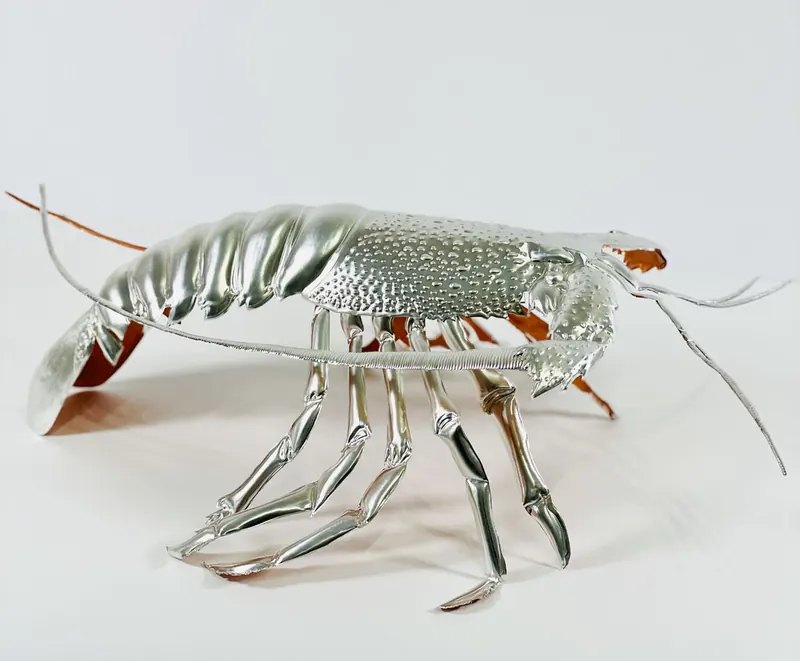

Portfolio
Opere
La ricerca si sviluppa attraverso percorsi distinti all'interno della lavorazione a sbalzo dell'alluminio. Ogni serie indaga una diversa modalità di tensione della superficie.

Struttura e Tensione
L'alluminio lavorato a sbalzo diventa struttura dinamica: superficie compressa e dilatata, tensioni visive tra equilibrio e resistenza della materia.

Forma Organica e Figura
La materia metallica si trasforma in forme organiche e presenze naturali: la superficie lavorata rivela il passaggio dalla materia alla vita.